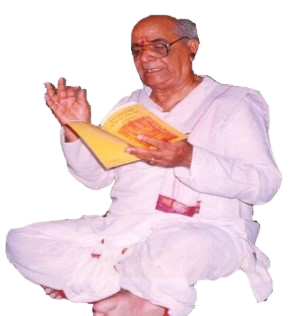
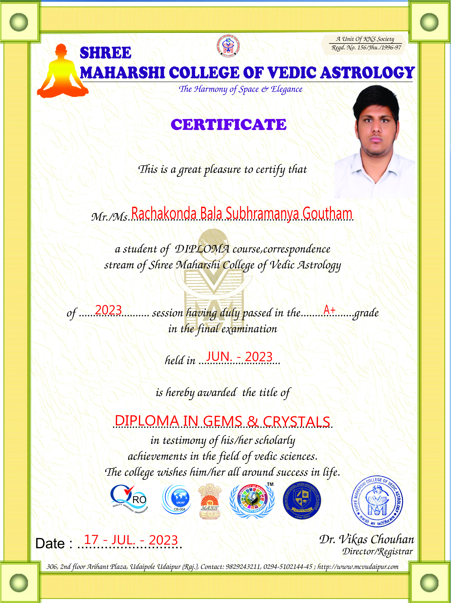
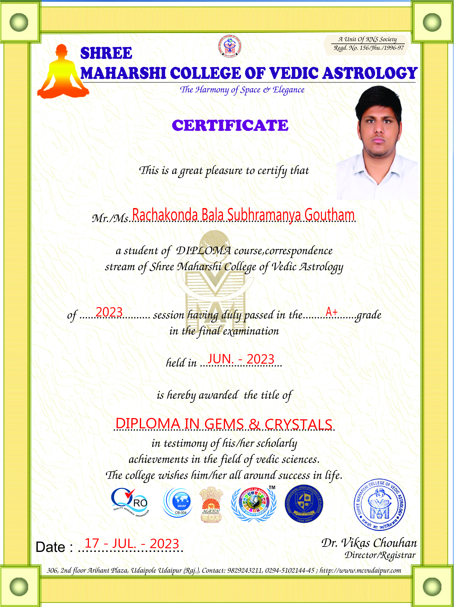

About Siddha Saraswatha
 Dr. D. VIJAYANANDANATHASahithya Vidya Vachaspati Sahitya Vidyalankara Acharya Vijayanandanatha is the founder of Ravindra Bharathi Gurukula Vidyalaya at early 90's. Later he took the Studentship of Srimad Paramahamsa Parivrajaka Acharya Avadhuta Sri Chandrasekharendra Saraswathi Swamy who is the former Peetadhipathi of Sri Kanchi Peetam at Kaanchipuram.Guruji established many temples. One of the most powerful temple is Asta Dasha Bhuji Maha Lakshmi Temple, located at Hasthinapuram, Hyderabad.which is derived from Saptashati Chandi where the godess chandi matha will be having 18 hands and 18 ayudhas. the meanings of these hands and ayudhas in saptashati are not only to kill the evil Sumba Nishumba but also the negative of our mind so that there will be positive Aura to our bodies. Upon getting divine blessings and inspiration from the Rajarajeshwari Peetham and vital encouragement from the knowledge of Indian astrology, Siddha Saraswatha and its web site Astro9s.com came into being-the vision being to serve one and all to find solution for difficulties and problems related to their lives. Rajarajeshwari Peetham is a spiritual and religious organisation under which we imbibe and employ and enhance activities for the welfare of people for the last one-decade. In Rajarajeshwari Peetham, there is a free consulting, rendered by Dr. D Vijayanandanahta, prominently known as Guruji towards problems and questions related to life and destiny. Not only consulting is given to innumerable persons, the divine cure for ailments, ill destiny, adverse running of business, family troubles etc, is also freely and generously bestowed to the congregation through Our Guruji . This programme is launched with the purpose of extending the benefits of knowledge of Astrology beyond limits. The motto behind the total endeavour is to serve the mankind based on the principles of Indian Astrology, with the blessings of Almighty the Jagat-janani. It is not only important what we offer for you, more important is what is meaningful and useful for you, a point on which we have kept a strict vigil throughout this programme. |
|---|
 


|
|---|
Jyotish Shastri
R Bala Subhramanya Goutham
PG Astrology
Diplama in Gems and Crystal
M.tech Mechanical Engineering
D.Acu Acupuncturist
Psychology Counsellor